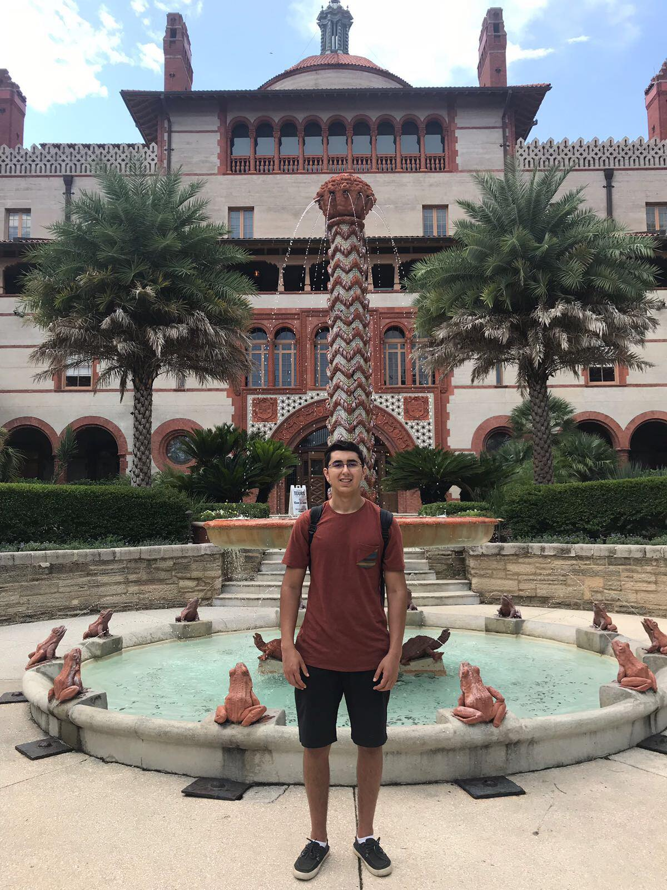

Daniel Galarraga
Cornell CS '21
I am a computer science student at
Cornell University who is particularly
interested in data mining & applied mathematics.
Contact Me:
dgalarraga11@gmail.com

About Me
I have lived in numerous countries around the world, specifically Malaysia, Venezuela, Brazil & USA. Living in these places has not only allowed me to learn Spanish & Portuguese, but also want to increase diversity in computer science. Besides academics, I enjoy watching/playing soccer, working out and reading about nutrition/self-improvement.